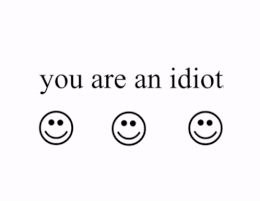
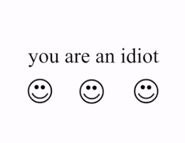
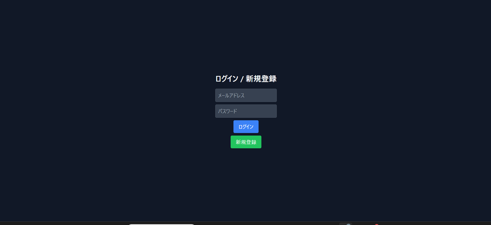
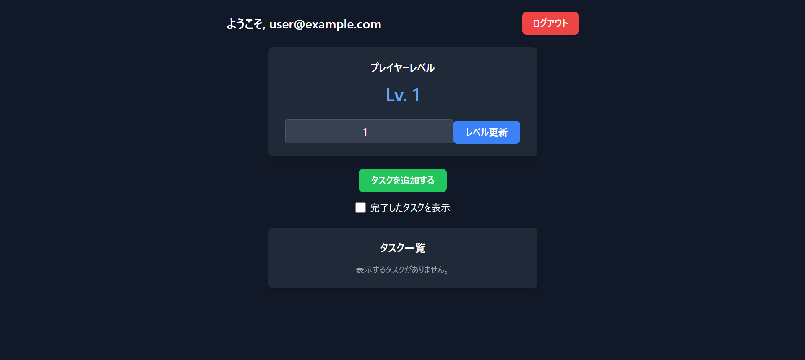

Projects
CLIチェス
'24/jan ターミナル・CLIで動く簡単なチェスアプリです。ターン制、自由な操作、軽い動作がウリです。main.pyを実行して遊んでください。CLIと人間二人だけがあり暇なときにでもするとよいと思います。オブジェクト指向プログラミングなど、学習した内容を多く盛り込みました。制作時間は20時間程度です。個人的にファイルを分けることの重要性を大きく理解できたプロジェクトだったと思います。


 Link
Link
YOU ARE AN IDIOT!!!
'25/feb GUIのライブラリであるpysideを用いて昔懐かしブラウザクラッシャーのレジェンド、「YOU ARE AN IDIOT」を作りました。実行すると人工音声が「YOU ARE AN IDIOT」と言いながら小さいウィンドウが0.8秒単位でランダムな位置に動きます。ウィルスのようなふるまいをしますが何らそのようなプログラムは実装されていません。消せば消えます。5時間ほどで作ることができました。pysideの基礎的なことを学べてよかったです。

 
Link

Link
Tarkov-task-todo
FPSゲームである『Escape from Tarkov』のタスク（ミッション）を管理する風のTodoアプリです。詳しくはReadmeを。
  \nGithub Link \nTarkov task ToDo